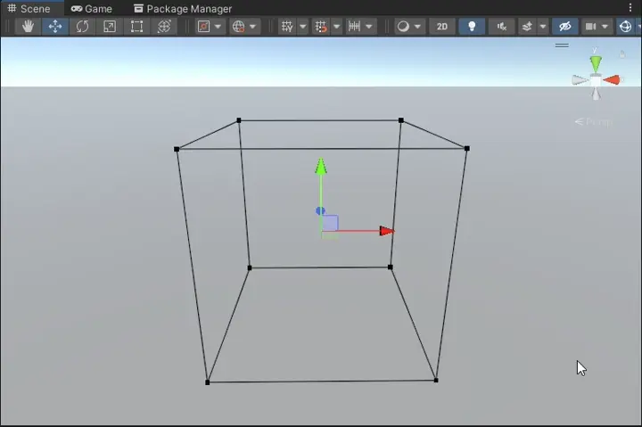
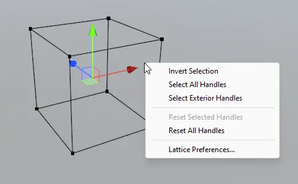
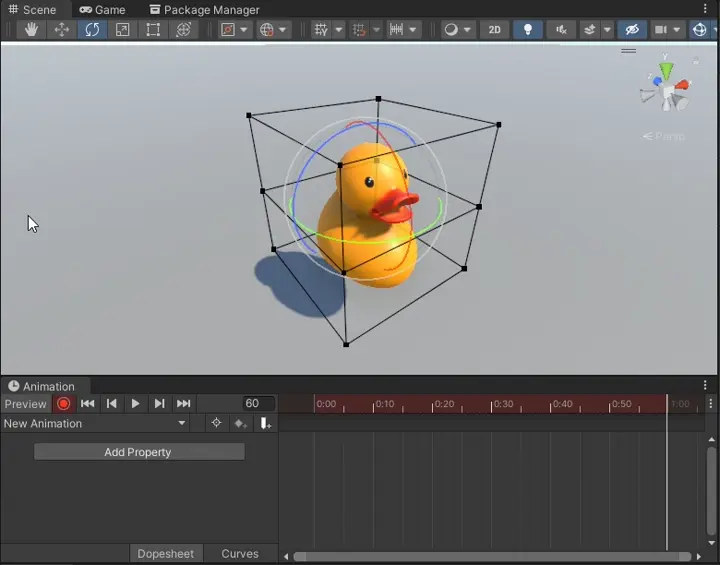

Using Lattices
The Editor

To edit Lattices, make sure Gizmos are enabled.
The editor currently supports:
Multiselection of handles
HoldShiftto select multiple handles at a time. Drag click to use a selection box (holdingShiftwill add or remove from current selection)Focusing with
F
Focuses on the currently selected handles. If no handles are selected, focuses on the whole LatticeCenter and Pivot position modes
When pivot is selected the last selected handle will act as the pivot point.Global and Local rotation modes
Both rotation modes are supported, global will show the tool in world space, and local in Lattice spaceUndo and Redo
Supports changing handle positions and changing selected handlesContext Menu
Right click when a lattice is selected to show the following operations:- Invert Selection
- Select All Handles
- Select Exterior Handles
- Reset Selected Handles
- Reset All Handles

Animating
You can keyframe Lattice handles using the animation timeline. The easiest way to do this is enable recording mode and then move the desired Lattice handles.

Scripting
The Lattice component comes with many public methods for moving handles. Take a look at Runtime/Components/Lattice.cs for all the available methods, the most useful of which will be:
/// Set the offset of a handle relative to its base position.
void SetHandleOffset(int x, int y, int z, Vector3 offset);
/// Set the position of a handle in local space.
void SetHandlePosition(int x, int y, int z, Vector3 position);
/// Set the position of a handle in world space.
void SetHandleWorldPosition(int x, int y, int z, Vector3 position);Example
This script controls a Lattice to follow a sine wave, simulating cloth waving in the wind. This code is used in the Drapes sample.
// Fields
[SerializeField] private float _speed;
[SerializeField] private float _scale;
[SerializeField] private float _distance;
[SerializeField] private Lattice _lattice;
// Update()
for (int i = 0; i < _lattice.Resolution.x; i++)
{
for (int j = 0; j < _lattice.Resolution.y; j++)
{
for (int k = 0; k < _lattice.Resolution.z; k++)
{
// Determine offset amount
float position = _scale * i;
float wind = Mathf.Sin(_speed * Time.timeSinceLevelLoad + position);
float offset = _distance * j * wind;
// Set handle offset
_lattice.SetHandleOffset(i, j, k, new Vector3(0, 0, offset));
}
}
}